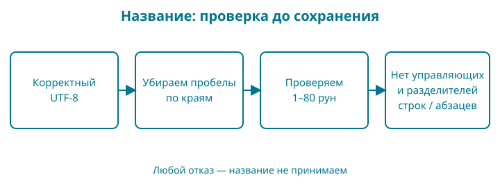

6. Сколько букв в названии книги
Название книги должно одинаково хорошо работать с русским, казахским и английским текстом. Если проверять его длину неподходящим способом, короткое название может неожиданно не пройти ограничение, а обрезанный текст — перестать читаться.
В этой главе мы научимся измерять строку и введём правило названия: убрать пробельные символы по краям, проверить кодировку и ограничить длину. Контрольная точка: examples/06-strings.
Набираете сами: подготовьте отдельную папку с вашим go.mod, файлами main.go и title.go ниже; title_test.go возьмите из контрольной точки. Тесты скидки оставьте в папке главы 5. Здесь исследуем отдельное правило; в главе 8 соединим название и цену.
Образ: мозаика и её кусочки
Посмотрите на короткое название ӘGo. Глаз легко различает три буквы. Теперь представьте, что каждую букву собирают из маленьких кусочков, а размер коробочки измеряют числом кусочков, а не числом букв. В записи UTF-8 латинским G и o нужен один байт каждой, а Ә — два.
Поэтому len("ӘGo") даст 4: он считает байты строки. Обход range декодирует руны — кодовые точки Unicode. Для этого названия их три, а начальные байтовые позиции — 0, 2, 3. Нарисуйте четыре клеточки и объедините первые две одной дугой. Так легче вспомнить, почему следующий символ начинается с позиции два.
Мозаика — только опора различия единиц счёта. Руна тоже не всегда равна одной видимой букве: букву с отдельным комбинируемым знаком можно представить несколькими кодовыми точками. Поэтому не запоминайте «руна — это буква» без оговорки. Каждый раз уточняйте, что требуется посчитать: байты, кодовые точки или воспринимаемые человеком символы.
Сначала строка и отдельная руна
Для этой главы нужны переменные, вызовы функций и цикл из глав 3–5. Новое — представление текста. Прежде чем писать проверку названия, отделим три вопроса: что хранится, как это записано в исходнике и что видит человек.
"ӘGo" — строковый литерал в двойных кавычках. string хранит последовательность байтов. 'Ә' — литерал руны в одинарных кавычках: одна кодовая точка Unicode. В var letter rune = 'Ә' явно выбран тип rune, другое имя int32. Это число, которому Unicode сопоставляет символ; сама руна не является строкой длины один.
У символа Ә кодовая точка U+04D8, то есть число 1240. UTF-8 записывает её двумя байтами; значения байтов и номер кодовой точки — разные числа. %c показывает символ по номеру руны, %d — номер числом. Поэтому результат зависит и от значения, и от формата печати.
Байт состоит из восьми бит и может хранить 256 значений — от 0 до 255. В Go byte является другим именем uint8. Это единица хранения, не обещание «одна буква». Значение text[0] — байт с индексом ноль; полный символ UTF-8 может занимать несколько байтов.
Кавычки и управляющие последовательности
В обычной строке "Go\nshop" последовательность \n означает один перевод строки, а \t — табуляцию. \" позволяет записать двойную кавычку, \\ — обратный слеш. В необработанной строке между обратными кавычками обратный слеш сам по себе не начинает такую последовательность. Это полезно, например, для многострочного текста. Кавычки ограничивают литерал и не входят в значение.
Формат %q показывает значение в кавычках и делает управляющие символы заметными. Когда на экране видны \n или \\n, не делайте вывод по числу печатаемых знаков: %q специально показывает экранированное представление.
Обход текста: индекс не номер буквы
range — форма обхода, связанная с for. В записи for offset, value := range text на каждом проходе появляются два значения: байтовое смещение начала символа и руна. Типы этих переменных — int и rune. Для корректной строки UTF-8 переход к следующей руне может пропускать больше одного байта. Если смещение не нужно, вместо его имени используют _.
Полный опыт:
package main
import (
"fmt"
"unicode/utf8"
)
func main() {
text := "ӘGo"
var letter rune = 'Ә'
fmt.Println(len(text), utf8.RuneCountInString(text))
fmt.Printf("%T %c %d\n", letter, letter, letter)
fmt.Printf("Первый байт: %d\n", text[0])
for offset, value := range text {
fmt.Printf("%d %c\n", offset, value)
}
fmt.Printf("%q\n", "Go\nshop")
fmt.Printf("%q\n", `Go\nshop`)
old := text
text = "Go" + " shop"
fmt.Println(old, text)
}
go run ./labs/01-text
4 3
int32 Ә 1240
Первый байт: 211
0 Ә
2 G
3 o
"Go\nshop"
"Go\\nshop"
ӘGo Go shop
4 3 означает четыре байта и три руны, а не противоречивые ответы на один вопрос. Номер руны 1240 не равен первому байту 211. Обход посещает смещения 0, 2, 3. Затем %q позволяет сравнить настоящий перевод строки с двумя символами «обратный слеш и n» в необработанном литерале.
Последняя строка опыта показывает ещё одно различие. Переменной text можно присвоить новую строку, например результат "Go" + " shop". Но изменить отдельный байт имеющегося строкового значения через text[0] = ... нельзя: строки неизменяемы. Переменная old сохраняет прежнее значение.
Измените и объясните. Замените ӘGo на Go: получите два байта, две руны и смещения 0, 1. Не заменяйте число ожидаемых рун числом байтов в будущей проверке названия. Пустую строку можно считать и обходить, но обращаться к её элементу [0] нельзя. Такой опыт с индексом завершится паникой — аварийным прекращением обычного выполнения; сначала проверяйте len(text) > 0.
Проверка перед правилом названия. Объясните четыре разные записи: "Ә", 'Ә', len("Ә") и utf8.RuneCountInString("Ә"). Ответ: строка, руна, два байта и одна руна. Если ответом везде получилось «одна буква», повторите опыт: иначе ограничение длины далее будет выглядеть необъяснимым.
Сначала наблюдение
В контрольной точке два рабочих файла: main.go запускает опыт, а title.go содержит правило. Оба относятся к одному пакету и лежат рядом с go.mod. Команда go run . соберёт их вместе.
Файл main.go:
package main
import (
"fmt"
"unicode/utf8"
)
func main() {
title, ok := normalizeTitle(" Шаңырақ Go ")
if !ok {
fmt.Println("Название не подходит")
return
}
fmt.Printf("Название: %q\n", title)
fmt.Println("Байтов:", len(title))
fmt.Println("Рун:", utf8.RuneCountInString(title))
for offset, letter := range "ӘGo" {
fmt.Printf("Байт %d: %c\n", offset, letter)
}
}
Пока не запускайте: попробуйте посчитать длину Шаңырақ Go. В слове семь букв, затем пробел и ещё две буквы. Почему у программы будет два разных числа?
Файл title.go:
package main
import (
"strings"
"unicode"
"unicode/utf8"
)
// normalizeTitle возвращает однострочное название без краевых пробелов.
// Лимит измеряется в рунах, а не в графемах или байтах.
func normalizeTitle(title string) (string, bool) {
if !utf8.ValidString(title) {
return "", false
}
title = strings.TrimSpace(title)
if title == "" || utf8.RuneCountInString(title) > 80 {
return "", false
}
for _, letter := range title {
if unicode.IsControl(letter) || letter == '\u2028' || letter == '\u2029' {
return "", false
}
}
return title, true
}
Теперь выполните go run .:
Название: "Шаңырақ Go"
Байтов: 17
Рун: 10
Байт 0: Ә
Байт 2: G
Байт 3: o
И 17, и 10 верны: они отвечают на разные вопросы.
Байт, руна и то, что видит читатель
Байт — единица из восьми бит. В Go byte является другим именем типа uint8, то есть беззнакового целого от 0 до 255. Строка хранит последовательность байтов. Её длина len(title) измеряется именно в байтах.
UTF-8 — способ представить кодовые точки Unicode байтами. ASCII — небольшой набор кодов для латинских букв, цифр, знаков и управляющих символов. Его символы, например G, в UTF-8 занимают один байт. Для букв в нашем казахском примере — по два. Поэтому семь букв дают четырнадцать байтов, а пробел и Go добавляют ещё три.
Руна в Go — другое имя типа int32; при работе с Unicode ею представляют кодовую точку. Функция utf8.RuneCountInString считает такие кодовые точки. Не путайте это с обещанием посчитать видимые знаки.
Один воспринимаемый знак может состоять из нескольких кодовых точек: например, буква и отдельно записанное ударение. Такие последовательности называют графемными кластерами. Ограничение в восемьдесят рун — понятное правило нашей учебной модели, но оно не равнозначно ограничению в восемьдесят видимых знаков.
Что возвращает range
В цикле for offset, letter := range "ӘGo" первое значение — смещение в байтах, второе — руна. Смещения получились 0, 2, 3. После Ә мы перешли сразу к байту с номером 2, потому что эта буква занимает два байта.
Если вместо обхода написать title[0], мы получим первый байт. Это может быть только часть многобайтовой последовательности. Для нашей строки такой байт нельзя считать первой буквой.
Пустая строка тоже имеет длину — ноль. Но элемента с индексом 0 у неё нет. Проверка длины до обращения по индексу нужна независимо от языка текста.
Зачем проверять UTF-8
Исходные файлы Go записываются в UTF-8, но строка, полученная во время работы, может содержать произвольные байты. Например, файл мог прийти в другой кодировке или быть повреждён.
utf8.ValidString отвечает, является ли последовательность корректным UTF-8. В нашем правиле неверная последовательность приводит к отказу. Мы не пытаемся угадать исходную кодировку и не выдаём заменённые символы за первоначальное название.
Это отдельная проверка от подсчёта рун. Сам по себе успешный вызов счётчика не подтверждает, что исходные байты были корректным текстом.
Четыре шага проверки

Сначала проверяем UTF-8. Затем strings.TrimSpace убирает пробельные символы с обоих краёв. Пробел между словами остаётся на месте.
После удаления краевых пробелов название не должно быть пустым, а его длина в рунах — превышать восемьдесят. В конце обходим оставшийся текст и отказываем при управляющих символах, например переводе строки внутри названия. Отдельно исключаем U+2028 (разделитель строки) и U+2029 (разделитель абзаца): unicode.IsControl проверяет категорию управляющих символов, а эти два разделителя относятся к другим категориям Unicode.
Обратите внимание на порядок. Строка из пробелов и переводов строк превратится в пустую и получит отказ. Название Go с переводом строки только в конце станет Go: краевые пробелы мы согласились удалять. А Go, перевод строки, магазин останется многострочным и будет отклонено.
Эта функция не выполняет полную Unicode-нормализацию и не защищает от всех визуально похожих символов. Её имя означает подготовку названия по перечисленным правилам. Когда понадобится поиск, мы отдельно обсудим сравнение и нормализацию Unicode, чтобы не менять авторское написание без объяснения.
Строка не меняется внутри себя
Функция TrimSpace возвращает строку. Мы сохраняем её в переменной title внутри normalizeTitle. Это новое присваивание локальному имени, а не изменение отдельных байтов переданного значения.
Поэтому вызывающий код получает подготовленное название через return. Если проигнорировать возвращённую строку, исходная переменная у вызывающего кода не станет автоматически обрезанной.
Проверяем границу, а не впечатление
В title_test.go есть проверка строки из восьмидесяти букв Ә. Её создаёт strings.Repeat("Ә", 80): первый аргумент — повторяемая строка, второй — число повторов. Она занимает сто шестьдесят байтов, но должна пройти наш лимит в рунах. Следующая проверка добавляет ещё одну такую букву и ожидает отказ.
Запустите go test ./.... Затем замените в функции подсчёт рун на len(title) и повторите тесты. Граница для казахского текста сломается. Верните исходную проверку и снова запустите тесты.
Это полезнее проверки только короткого английского слова: для него число байтов и рун совпадает, и неправильная реализация могла бы выглядеть правильной.
Читаем новую запись по символам
import (...) объединяет несколько импортов в группу; скобки здесь не вызывают функцию. В for offset, letter := range text запятая разделяет два имени, а range задаёт обход строки. Когда первое значение не нужно, вместо offset ставят _.
В выводе %q показывает строку в кавычках с экранированием при необходимости, %c выводит символ по значению руны. Путь "unicode/utf8" внутри импорта содержит слеш: это часть пути пакета, а не арифметическое деление.
В тестах \t означает табуляцию, \n — перевод строки, \xff задаёт один байт по шестнадцатеричному коду. Последняя запись позволяет намеренно построить неверный UTF-8. Запись \u0301 задаёт кодовую точку Unicode; язык сам кодирует её в UTF-8 внутри строки. Такие последовательности полезны для опытов, где обычный вид текста скрыл бы различие.
'\u2028' и '\u2029' в одинарных кавычках — литералы рун: каждый задаёт одну кодовую точку. В двойных кавычках "\u2028" была бы строка. Мы сравниваем letter с рунами через ==, а не со строками.
Проверка понимания. Не называя просто «длину», произнесите полное условие нашего ограничения: сколько чего мы считаем и что делаем с пробелами по краям.
Разминка
Предскажите. Сколько байтов и рун у строки Go? А у Ә?
Заполните. Индекс в for offset, letter := range title измеряется в байтах или в рунах?
Почините. Ограничение названия обещает восемьдесят рун, но функция проверяет len(title) <= 80. Какой пример покажет ошибку?
Задание
Обязательное. Допишите тест TestInternalSpaces: normalizeTitle(" Go дүкені ") должна вернуть "Go дүкені" и true. Между словами два пробела; наша функция их не объединяет.
На своих данных. Возьмите название на знакомом вам языке, предскажите число рун и сравните с результатом. Если ожидание разошлось с выводом, сначала уточните, не включает ли видимый знак несколько кодовых точек.
По желанию. Сравните строки "é" и "e\u0301": напечатайте их длины в байтах, длины в рунах и результат ==. Не исправляйте сравнение удалением ударения: это меняет данные.
Ответы
У Go два байта и две руны; у Ә — два байта и одна руна. range возвращает байтовое смещение. Восемьдесят букв Ә обнаружат ошибку проверки через len: рун восемьдесят, а байтов сто шестьдесят.
В обязательном тесте сравните оба результата: подготовленный текст и признак успеха. Для дополнительного опыта два варианта é занимают соответственно два и три байта, содержат одну и две руны и не равны как строки. Они могут выглядеть одинаково, но последовательности байтов различны.
У магазина появилось правило названия. В следующей главе соберём несколько названий в упорядоченный каталог.